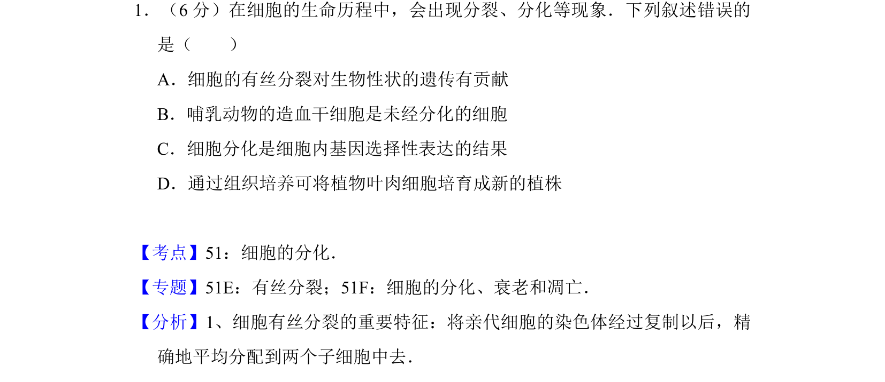
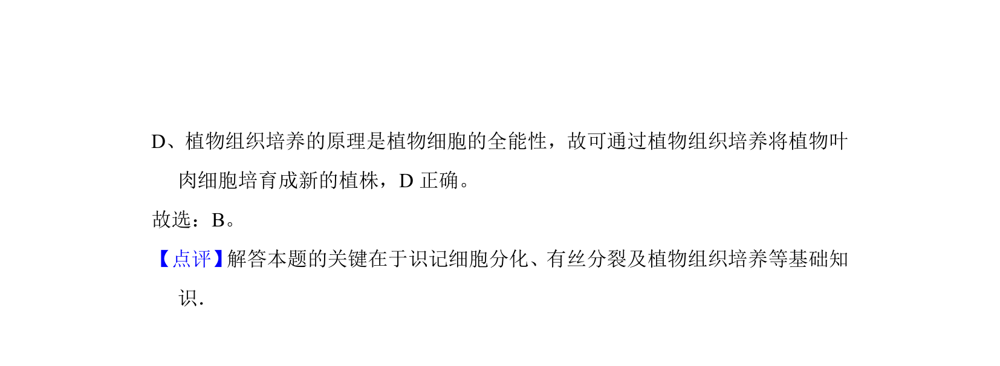

考点：细胞分化 有丝分裂 基因表达 组织培养

该题考查细胞生命历程中的分裂与分化现象，要求找出错误叙述的选项。

📄 原 PDF 第 1 页：
素材/真题/吉林/2008-2024·（吉林）生物高考真题/2016年高考生物试卷（新课标Ⅱ）（解析卷）.pdf
1．（6分）在细胞的生命历程中，会出现分裂、分化等现象．下列叙述错误的 是（ ） A．细胞的有丝分裂对生物性状的遗传有贡献 B．哺乳动物的造血干细胞是未经分化的细胞 C．细胞分化是细胞内基因选择性表达的结果 D．通过组织培养可将植物叶肉细胞培育成新的植株
【考点】51：细胞的分化．菁优网版权所有 【专题】51E：有丝分裂；51F：细胞的分化、衰老和凋亡． 【分析】1、细胞有丝分裂的重要特征：将亲代细胞的染色体经过复制以后，精 确地平均分配到两个子细胞中去．